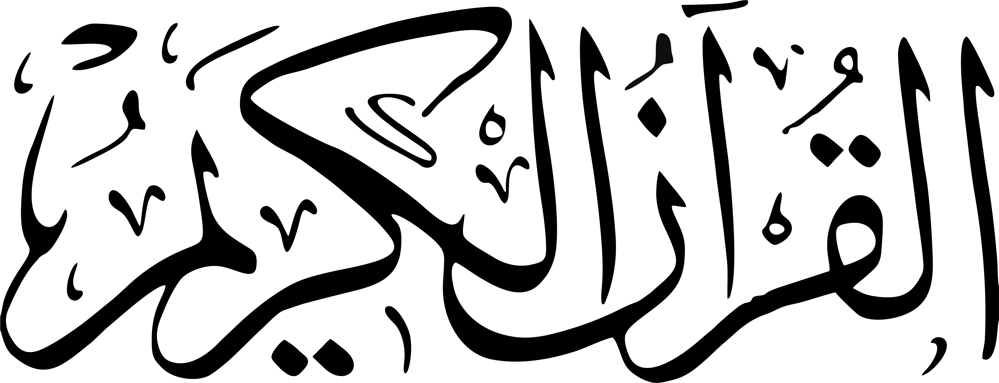

Home
Features
Profil
Contact

Nama Surat
1. Al - Fatihah
20. Taha
39. Az -Zummar
58. Al - Mujadalah
77. Al - Mursalat
96. Al - Alaq
2. Al - Baqarah
21. Al - Anbiya'
40. Fatir
59. Al - Hasyr
78. An - Naba'
97. Al - Qadr
3. Ali Imran
22. Al - Hajj
41. Fussilat
60. Al - Mumtahanah
79. An - Nazi'at
98. Al - Bayyinah
4. An-Nisa'
23. Al - Mu'minun
42. Asy - Syura
61. As - Saff
80. Abasa
99. Al - Zalzalah
5. Al - Maidah
24. An - Nur
43. Az - Zukhruf
62. Al - Jumu'ah
81. At - Takwir
100. Al - 'Adiyat
.6 Al - An'am
25. Al - Furqon
44. Ad - Dukhan
63. Al - Munafiqun
82. Al - Infitar
101. At - Qori'ah
7. Al - A'raf
26. As - Syu'ara'
45. Al - Jasiyah
64. At - Tagabun
83. Al - Mutoffifin
102. At - Takasur
8. Al - Anfal
27. An - Naml
46. Al - Ahkaf
65. At - Thalaq
84. Al - Insyiqoq
103. Al - Asr
9. At - Taubah
28. Al - Qasas
47. Muhammad
66. At - Tahrim
85. Al - Buruj
104. Al - Humazah
10. Yunus
29. Al - Ankabut
48. Al - Fath
67. Al - Mulk
86. At - Tariq
105. Al - Fil
11. Hud
30. Ar - Rum
49. Al- Hujurat
68. Al - Qolam
87. Al - A'la
106. Al - Quraisy
12. Yusuf
31. Lukman
50. Qaf
69. Al - Haqqoh
88. Al - Gassiyah
107. Al - Ma'un
13. Ar - Ra'd
32. As - Sajdah
51. Az - Zariyat
70. Al - Ma'arij
89. Al - Fajr
108. Al - Kausar
14. Ibrahim
33. Al - Ahzab
52. At -Tur
71.Nuh
90. Al - Balad
109. Al - Kafirun
15. Al - Hijr
34. Saba'
53. An - Najm
72. Al - Jinn
91. As - Syams
110. An - Nasr
16. An - Nahl
35. Fatir
54. Al - Qamar
73. Al - Muzammil
.92 Al - Lail
111. Al - Lahab
17. Al - Isra'
36. Yasin
55. Ar - Rahman
74. Al - Muddassir
93. Ad - Dhuha
112. Al - Ikhlas
18. Al - Kahfi
37. AS Saffat
56. Al -Waqi'ah
75. Al - Qiyamah
94. As - Syarh
113. Al - Falaq
19. Maryam
38. Sad
57. Al - Hadid
76. Al - Insan
95. At - Tin
114. An - Nas